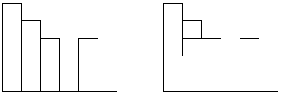

Anh Bo có một hàng rào gồm n cây cọc gỗ xếp liên tiếp nhau được đánh số từ 1 đến n. Chiều cao của các cây cọc lần lượt là a1, a2, ..., an. Anh Bo có rất nhiều miếng dán hình chữ nhật với đủ mọi loại kích thước. Để trang trí, anh muốn dán kín hàng rào trên bằng các miếng dán này. Bạn hãy giúp anh Bo tìm cách dán sao cho sử dụng ít hình chữ nhật nhất nhé. Các miếng dán không được đè lên nhau và không được dán dư vào khoảng trống, không cắt hình chữ nhật thành hình khác (hình dưới).

Các cột hàng rào Dán hàng rào bằng 5 hình chữ nhật
Dữ liệu nhập:
- Dòng thứ nhất là số nguyên n (1 ≤ n ≤ 1.000)
- Dòng thứ hai gồm n số a1, a2, ..., an, mỗi số cách nhau một khoảng trắng (0 ≤ ai ≤ 109)
Dữ liệu xuất:
- Là số lượng ít nhất các miếng dán hình chữ nhật cần dùng.